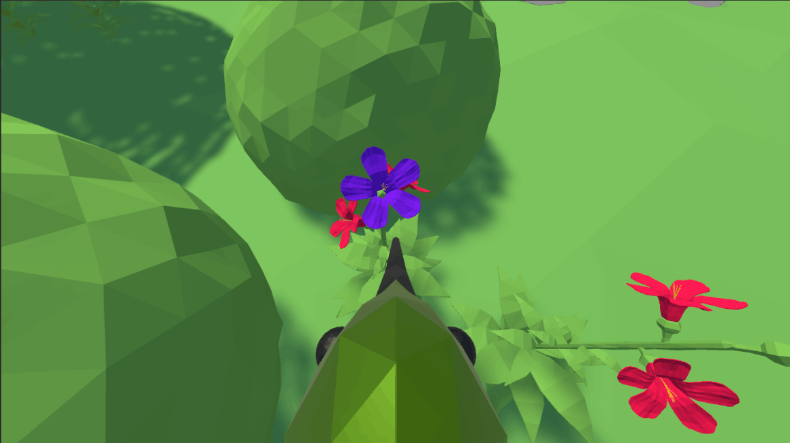
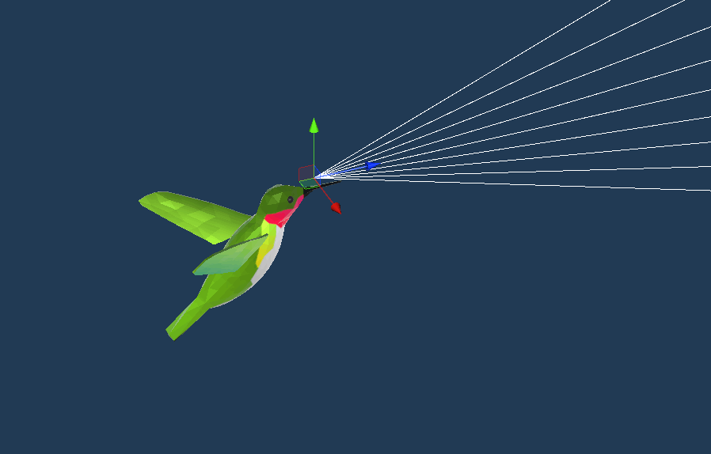

Built with
Web Building SoftwareFor my dissertation titled "Behavioural Differences in Intelligent Virtual Agents With and Without Active Systems", I trained a completely clueless virtual hummingbird present on a virtual island to locate and drink nectar from virtual flowers using only it's eyes (RGB camera, active vision) and then compared the behaviour to a hummingbird with access to location and orientation of the flowers and itself.

A blog I had to write an assignment for the Deep Learning module in my MSc Artificial Intelligence.
This article discusses and reviews the research done in the design and development of virtual agents with a standalone integrated perception systems in- dependent of the environmental and external factors — software and/or hard- ware — with a major focus on visual perception, and in that too, active visual perception rather than passive visual perception. Most of the agents, methods and techniques discussed in this paper are virtual or exist in a virtual environment. Previous research has been studied, critiqued, further thought upon and ultimately connected leading to a thought experiment that puts into perspective how giving power of sight to intelligent virtual agents affects their behaviour compared to agents that do not “see”.

Built with
Web Building Software